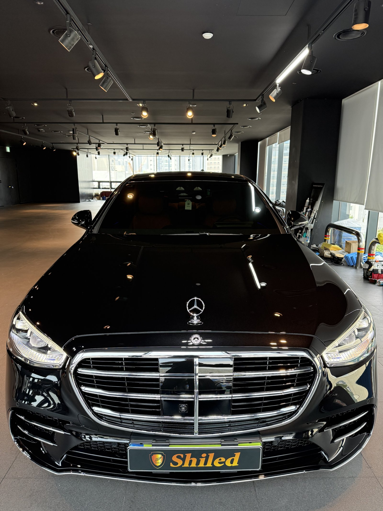
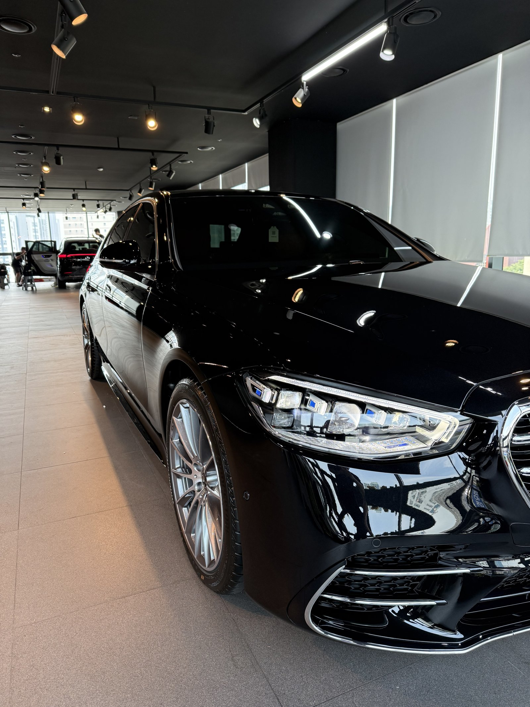
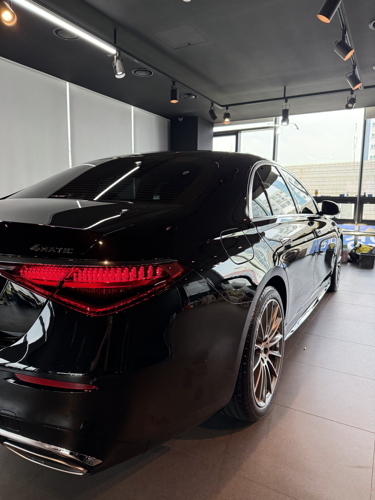
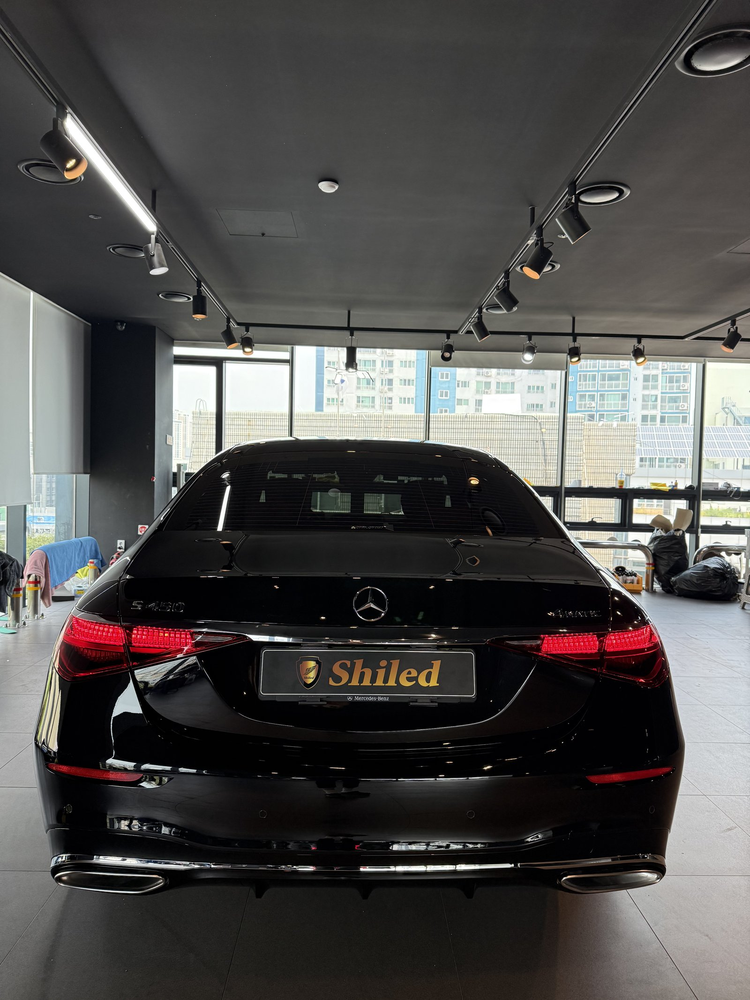
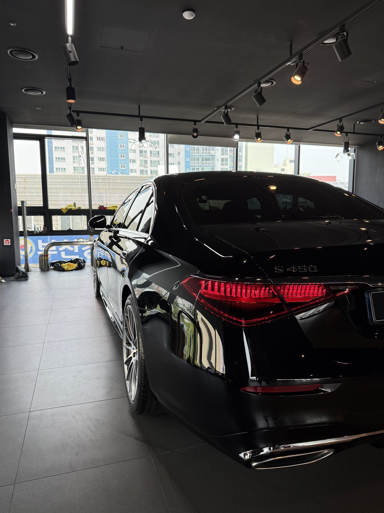
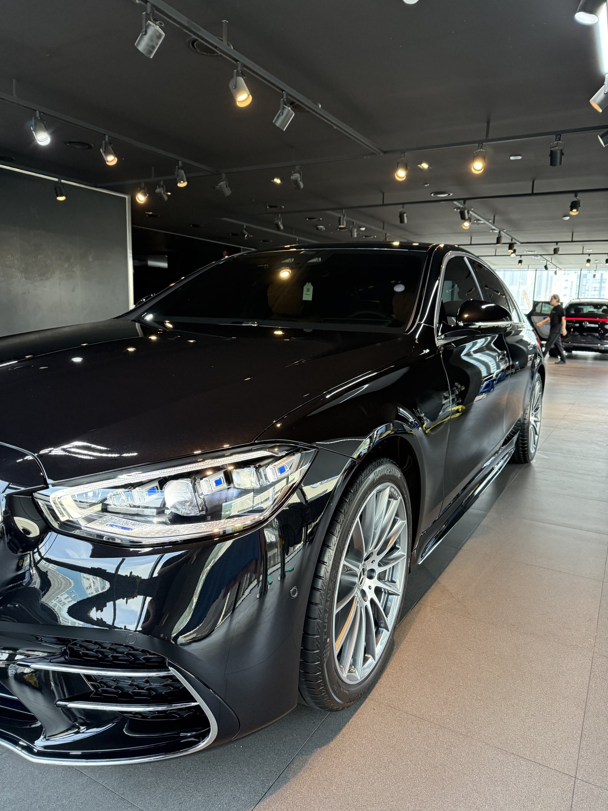
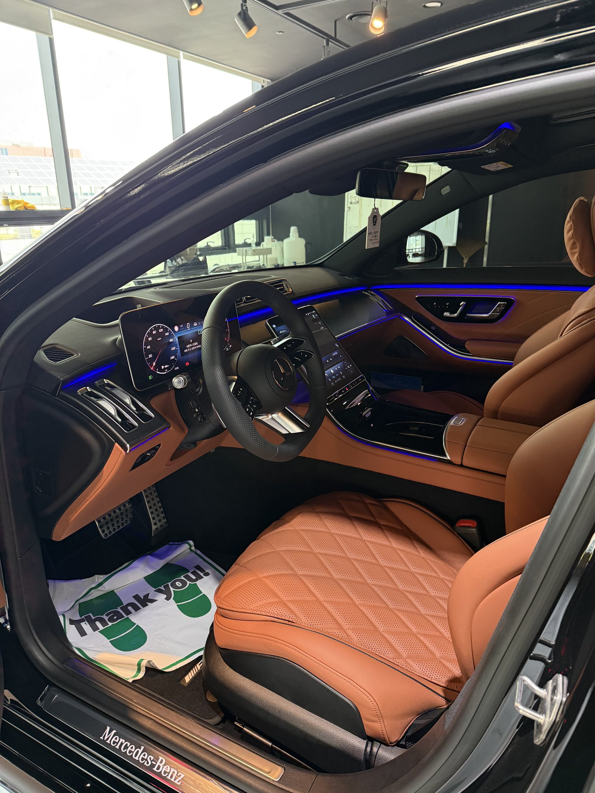
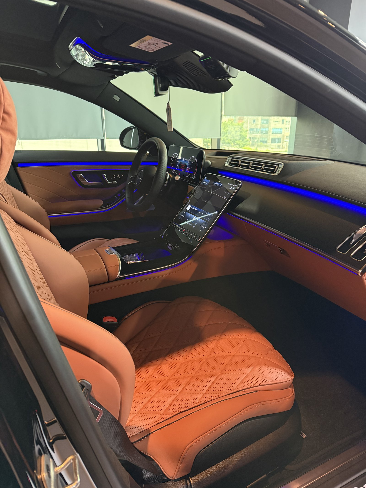
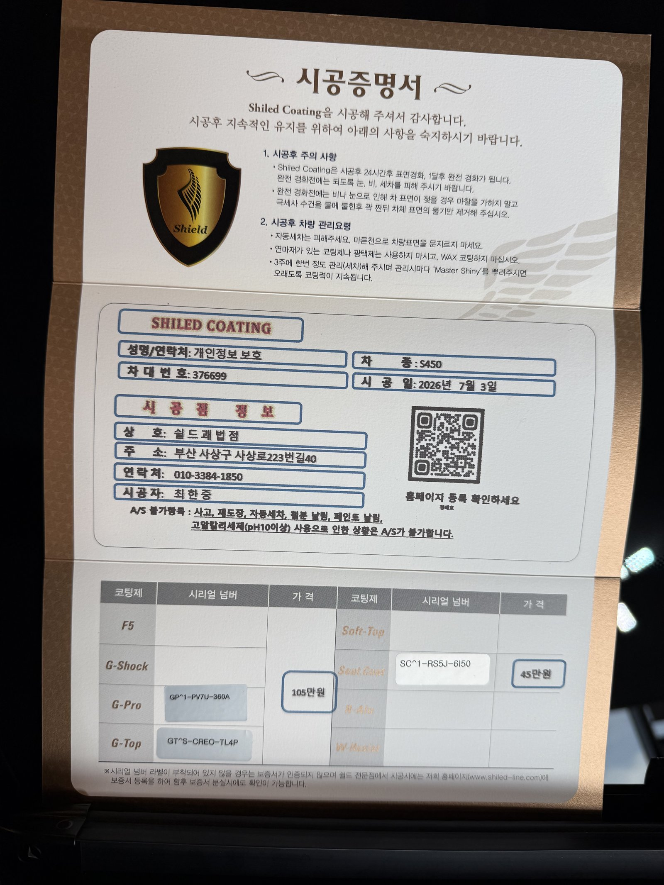

벤츠 S클래스 S450 검정입니다. 아직 출고 전, 새 차입니다.
이 차는 외부 G-PRO·G-TOP 듀얼 유리막코팅과 탠 가죽시트 시트코팅을 함께 진행했습니다.

새 차인데 왜 출고 전에 코팅을 하나
도장면이 가장 깨끗한 시점이 출고 전입니다.
운행이 시작되면 세차와 주행으로 미세한 잔기스와 오염이 쌓이기 시작합니다. 그 전, 신차 상태 그대로일 때 코팅막을 입혀두는 겁니다. 그래서 쉴드광택은 출고 전 신차 시공을 맡아 진행합니다.

플래그십 세단에 왜 듀얼코팅인가
이 차는 G-PRO·G-TOP 듀얼코팅으로 진행했습니다.
G-PRO는 스크래치 내성을 높이는 하드코팅(경도가 높아 잔기스에 강한 막)이고, G-TOP은 발수·방오 성능을 높입니다. S클래스처럼 매일 타는 플래그십 세단은 잔기스와 오염 둘 다 놓칠 수 없어서, 두 코팅을 겹쳐 단단함과 관리 편의성을 함께 잡습니다. 코팅제는 대표가 화학공학 전공으로 직접 개발·제조한 제품입니다.

기술자의 팁
신차라고 바로 코팅을 올리지 않습니다. 운송·보관 중 묻은 미세 오염을 디테일링 세차와 탈지로 걷어낸 뒤에 올립니다. 깨끗한 바탕 위에 올려야 코팅이 제대로 밀착합니다.



연한 가죽시트엔 왜 시트코팅이 필요한가
이 차 실내는 탠(카멜) 톤 가죽시트입니다.
연한 가죽은 청바지 같은 짙은 옷의 염료가 옮겨붙는 물빠짐 자국이 유난히 잘 보입니다. 시트코팅을 올리면 표면에 방오막이 생겨, 오염이 가죽 속으로 스며들기 전에 닦아낼 여유가 생깁니다. 밝은색 시트를 고르셨다면 시트코팅을 함께 권해드리는 이유입니다.


시공증명서를 함께 드립니다
모든 시공 차량에 시공증명서를 드립니다.
차종·시공일·코팅제 시리얼 번호가 적혀 있고, 홈페이지에 등록해 보증을 받으실 수 있습니다. 이 차는 듀얼코팅으로 기록돼 있습니다.

차종·시공일·코팅제 시리얼이 기재된 시공증명서
자주 묻는 질문
Q. 새 차인데 왜 출고 전에 코팅을 하나요?
A. 도장면이 가장 깨끗한 시점이 출고 전입니다. 운행이 시작되면 잔기스와 오염이 쌓이는데, 그 전에 코팅막을 입혀두면 처음 상태를 더 오래 지킵니다.
Q. S클래스처럼 플래그십 세단엔 왜 듀얼코팅인가요?
A. G-PRO·G-TOP 듀얼코팅으로 진행했습니다. 스크래치 내성을 높이는 G-PRO와 발수·방오를 높이는 G-TOP을 겹쳐, 단단함과 오염 관리를 함께 잡습니다.
Q. 밝은색 가죽시트에는 왜 시트코팅이 필요한가요?
A. 탠 톤처럼 연한 가죽은 짙은 옷의 염료가 옮겨붙는 물빠짐 자국이 특히 잘 보입니다. 시트코팅으로 방오막을 올려두면 오염이 스며들기 전에 닦아낼 수 있습니다.
Q. 쉴드광택 위치와 예약은 어떻게 하나요?
A. 부산 남구 유엔로220 1F 쉴드광택입니다. 예약·상담은 010-3384-1850, 대표 최한중이 직접 상담하고 책임 시공합니다.
새 차일수록 시작점이 다릅니다. 가장 깨끗할 때 입혀두십시오.
제품을 직접 만드는 사람이 직접 시공합니다.
부산에서 신차코팅을 고민 중이시면 편하게 연락 주십시오.
어떤 차를 타냐보다 어떻게 타냐가 중요합니다~!
시공 중에는 전화를 받지 못할 때가 많습니다.
카카오톡으로 차종과 원하시는 시공을 남겨주시면 확인 후 답변드립니다.
쉴드광택 · 부산 남구 유엔로220 1F · 대표 최한중